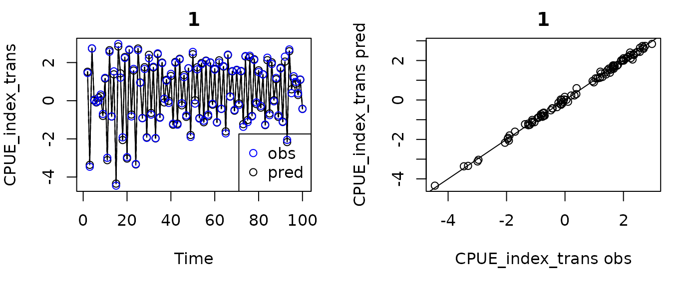

GPEDM Models For Fisheries
fisheries.RmdIntroduction
This vignette discusses the use of an alternative parameterization of
the GP-EDM model designed for use in fisheries applications, implemented
in the function fitGP_fish. This fits a GP model of the
form
where
is an index of abundance (typically in units of catch per unit effort,
CPUE),
are lags of
,
are lags of harvest (in biomass or numbers), and
are optional covariates. The index of abundance is assumed proportional
to biomass, with proportionality constant
(the “catchability”, units: CPUE/biomass). The composite variable
is assumed proportional to the biomass of individuals remaining after
harvesting (“escapement”).
The function fitGP_fish finds parameter
using stats::optimize applied to the posterior likelihood
of fitted GP models given
.
If you want to skip optimization of
and use a fixed value for it, one can be provided under
bfixed.
The function fitGP_fish has all of the same
functionality as fitGP, including the use of hierarchical
structures and augmentation data, and can be used with all of the
predict functions in the package. In all prediction cases,
it is only necessary to supply
and
- escapement will be calculated internally. The inputs and structure of
the inputs are somewhat more constrained than in fitGP (see
below), which is just something to be aware of.
Sample dataset
As a sample dataset, we will use a simulated Ricker model with harvest. This model has chaotic dynamics, and data from two ‘regions’. For this first example we will just use Region A, where we know the true value of is 0.01.
Fitting a model
The function fitGP_fish requires the use of
data with pre-generated lags (option A1 in Specifying
training data)). Values for y, m, and
h are required, which should be the names of the
appropriate columns in data. A value for time
is also recommended. For the sample dataset, we will use just one
lag.
RHlags=makelags(RickerHarvestA, y=c("CPUE_index","Catch"), time="Time", tau=1, E=1, append=T)
fishfit0=fitGP_fish(data=RHlags, y="CPUE_index", m="CPUE_index_1", h="Catch_1", time="Time")
summary(fishfit0)
#> Number of predictors: 1
#> Fisheries model b: 0.01008
#> Length scale parameters:
#> predictor posteriormode
#> phi1 escapement_1 1.08909
#> Process variance (ve): 0.03538059
#> Pointwise prior variance (sigma2): 2.978148
#> Number of populations: 1
#> In-sample R-squared: 0.9683622Computed values of “escapement” (lagged) will be appended to the
model$insampresults table (also to any
model$outsampresults table). By default, the composite
variable will be called “escapement”, unless you supply a different name
for it (argument xname of fitGP_fish). In this
case, no data transformation is applied (see Data tranformations, so
predmean_trans and predmean are the same.
head(fishfit0$insampresults)
#> timestep pop predmean_trans predfsd_trans predsd_trans obs_trans predmean
#> 1 1 1 NA NA NA 15.074782 NA
#> 2 2 1 68.839049 1.070020 4.992834 64.075778 68.839049
#> 3 3 1 1.858803 2.948409 5.698822 1.987008 1.858803
#> 4 4 1 32.931192 2.021955 5.279371 30.573418 32.931192
#> 5 5 1 30.510587 1.235031 5.030781 31.422368 30.510587
#> 6 6 1 28.405921 1.193412 5.020726 28.992217 28.405921
#> obs escapement_1
#> 1 15.074782 NA
#> 2 64.075778 14.922865
#> 3 1.987008 63.223627
#> 4 30.573418 1.969085
#> 5 31.422368 29.884448
#> 6 28.992217 30.866295Conditional effects (from getconditionals) will be
plotted with respect to the calculated escapement values (and any
covariates, if present).
getconditionals(fishfit0)Note that this function does not go through (0,0) because there are no data there. This could potentially cause problems if the model is extrapolated to regions of low or no escapement (as a result of high catch rates).
To force the model through the origin (so that zero escapement means
zero CPUE), you can supply an additional datapoint at 0 escapement, 0
CPUE. It works well to supply these under augdata, since
these points are used as training data and in determining the range the
conditional plots, but will not be included in the results table, used
to evaluate fit, or plotted as part of the time series. Note that the
model will probably not go through 0 exactly, because error is assumed
the same at the origin as it is elsewhere. Also note that if a
population experiences substantial immigration or emigration, the true
function may not actually intersect the origin.
#force zero escapement = zero CPUE
#the value for Time doesn't matter, but it should NOT be an NA
zeropin=data.frame(Time=0,CPUE_index=0,CPUE_index_1=0,Catch_1=0)
fishfit=fitGP_fish(data=RHlags, y="CPUE_index", m="CPUE_index_1", h="Catch_1", time="Time",
augdata=zeropin)
summary(fishfit)
#> Number of predictors: 1
#> Fisheries model b: 0.01007
#> Length scale parameters:
#> predictor posteriormode
#> phi1 escapement_1 1.33691
#> Process variance (ve): 0.03383819
#> Pointwise prior variance (sigma2): 3.167774
#> Number of populations: 1
#> In-sample R-squared: 0.969906
getconditionals(fishfit)Getting MSY using iterated prediction
Given a fitted fisheries model, the steady state catch and biomass
given a certain harvest rate can be obtained using iterated prediction.
This can be done using the predict_iter function. Similar
to predict, you supply a newdata data frame,
which (for a one-population model) should contain the time,
m, and h columns. You also supply a harvest
rate hrate from 0 to 1, which indicates the proportion of
predicted CPUE biomass to be harvested.
Starting with the first row of newdata, the predicted
y variable is inserted into the first column of
m for the next timestep, and the other values of
m are shifted right by 1. The first value of h
at the next timestep is calculated as y/b*hrate and the
other values of h are shifted right by 1. Escapement is
recalculated, and a new prediction for y is made. This
continues for as many rows as are in newdata. Thus, this
procedure assumes that all lags are present, evenly spaced, and in order
(first lag is the first column). Time steps are assumed to be evenly
spaced. The units of y and m are assumed to be
the same.
In newdata, only the first timepoint (row) for
m and h needs to be filled in. The rest can be
NA and will be filled in as the model iterates forward. The values of
time must be filled in. If there are covariates
(z), they should also be included in newdata,
and values must be supplied for all time points. If there are multiple
populations, newdata should contain pop and
there should be duplicated timesteps for each population (see the next
sections for a 2-population example).
#number of timesteps to iterate
nfore=50
#use the forecast feature to create the first row
RHfore=makelags(RickerHarvestA, y=c("CPUE_index","Catch"), time="Time", tau=1, E=1, forecast=T)
#get remaining timepoints. use expand.grid here if you have multiple populations.
RHfore2=data.frame(Time=(RHfore$Time[1]+1):(RHfore$Time[1]+nfore-1))
#create empty matrix for future values
RHfore3=matrix(NA, nrow=nrow(RHfore2), ncol=2,
dimnames=list(NULL,c("CPUE_index_1","Catch_1")))
#combine everything
RHfore=rbind(RHfore,cbind(RHfore2,RHfore3))
head(RHfore)
#> Time CPUE_index_1 Catch_1
#> 1 101 22.36223 661.5723
#> 2 102 NA NA
#> 3 103 NA NA
#> 4 104 NA NA
#> 5 105 NA NA
#> 6 106 NA NA
msyfore=predict_iter(fishfit, newdata = RHfore, hrate = 0.5)The resulting escapement and catch values will be included in the
outsampresults table.
head(msyfore$outsampresults)
#> timestep pop predmean_trans predfsd_trans predsd_trans predmean escapement_1
#> 1 101 1 66.63400 1.106339 4.929575 66.63400 15.697977
#> 2 102 1 23.73961 1.240739 4.961467 23.73961 33.317000
#> 3 103 1 73.60276 1.084414 4.924701 73.60276 11.869805
#> 4 104 1 18.54411 1.160412 4.941992 18.54411 36.801380
#> 5 105 1 74.34391 1.094346 4.926898 74.34391 9.272053
#> 6 106 1 18.02498 1.141830 4.937662 18.02498 37.171954
#> Catch_1
#> 1 661.5723
#> 2 3307.4387
#> 3 1178.3370
#> 4 3653.3394
#> 5 920.4534
#> 6 3690.1269
par(mfrow=c(1,2),mar=c(4,4,2,1))
plot(predmean~timestep, data=msyfore$outsampresults, type="l")
plot(Catch_1~timestep, data=msyfore$outsampresults, type="l")Evaluating the steady state catch across a range of
hrate values allows you to obtain the maximum sustainable
yield (MSY), associated fishing rate (f_MSY), and associated CPUE
indexed biomass (proportional to B_MSY). In the example below, we make
iterated predictions for 50 timesteps as above, but record just the last
10 values. Since the resulting time series in this example can exhibit
chaos and cycles, we then take the average over those values for each
harvest rate.
#vector of harvest rates
hratevec=seq(0,1,length.out=40)
#number of timepoints to save
tsave=10
catchres=expand.grid(time=1:tsave,hrate=hratevec)
catchres$catch=NA
catchres$cpue=NA
for(i in seq_along(hratevec)) {
msyfore=predict_iter(fishfit, newdata = RHfore, hrate = hratevec[i])
#note that the next 2 lines only work if there is one population
catchres$catch[catchres$hrate==hratevec[i]]=msyfore$outsampresults$Catch_1[(nfore-tsave+1):nfore]
catchres$cpue[catchres$hrate==hratevec[i]]=msyfore$outsampresults$predmean[(nfore-tsave+1):nfore]
}
#average over the last 10 timepoints
catchresagg=aggregate(cbind(catch,cpue)~hrate, data=catchres, mean)
(fmsy=catchresagg$hrate[which.max(catchresagg$catch)])
#> [1] 0.8717949
(Bmsy=catchresagg$cpue[which.max(catchresagg$catch)])
#> [1] 74.54768
par(mfrow=c(1,2),mar=c(4,4,2,1))
plot(catch~hrate, data=catchres, col="gray")
lines(catch~hrate, data=catchresagg, lwd=2, col="red")
abline(v=fmsy, col="red")
plot(cpue~hrate, data=catchres, col="gray")
lines(cpue~hrate, data=catchresagg, lwd=2, col="red")
abline(v=fmsy, col="red")It is also possible to set this up using a constant catch value
rather than constant catch rate. To do this, omit hrate and
fill all the catch rows and columns in newdata with a
constant value. In this example with chaotic dynamics, this can lead to
negative escapement, so it was not done here.
Multiple populations
The fitGP_fish model can only have a single value of
.
If you have multiple regions (populations), each with their own CPUE
index and Catch values, you can fit a hierarchical model using
fitGP_fish in the same way as fitGP, but the
catchability will be assumed the same for both regions. If you have
reason to believe this is not the case (e.g. different survey methods
are used in each region, so the units of CPUE are not the same), one
solution is to fit models separately for each region and obtain separate
estimates for
.
The sample dataset contains time series for a second region B, where the true value of is 0.005. It also has a different catch history.
par(mfrow=c(1,2),mar=c(4,4,2,1))
plot(Catch~Time, data=RickerHarvestB, type="l", main="Region B")
plot(CPUE_index~Time, data=RickerHarvestB, type="l", main="Region B")
#model for region B
RHlagsB=makelags(RickerHarvestB, y=c("CPUE_index","Catch"), time="Time", tau=1, E=1, append=T)
zeropin=data.frame(Time=0,CPUE_index=0,CPUE_index_1=0,Catch_1=0)
fishfitB=fitGP_fish(data=RHlagsB, y="CPUE_index", m="CPUE_index_1", h="Catch_1", time="Time",
augdata=zeropin)
summary(fishfitB)
#> Number of predictors: 1
#> Fisheries model b: 0.00471
#> Length scale parameters:
#> predictor posteriormode
#> phi1 escapement_1 0.81279
#> Process variance (ve): 0.04297006
#> Pointwise prior variance (sigma2): 3.263646
#> Number of populations: 1
#> In-sample R-squared: 0.9609037If you felt the need to combine these into a single hierarchical
model, you could fix the values of
for each population, calculate escapement, and fit a regular
fitGP to the escapement values. Be sure to use
scaling="local" because the values are assumed to be in
different units by virtue of having different catchabilities, but the
dynamics should be proportional. You may want to check whether the
combined model actually produces better within-population fits than the
models fit separately. If there are sufficient data, there is a good
chance it will not.
bA=fishfit$b
bB=fishfitB$b
RHlags$escapement_1=RHlags$CPUE_index_1-RHlags$Catch_1*bA
RHlagsB$escapement_1=RHlagsB$CPUE_index_1-RHlagsB$Catch_1*bB
par(mfrow=c(1,2),mar=c(4,4,2,1))
plot(CPUE_index~escapement_1, data=RHlags, main="Region A")
plot(CPUE_index~escapement_1, data=RHlagsB, main="Region B")
#alternatively, you could pull escapement out of the insampresults table,
#or use it to double check your math
head(fishfit$insampresults)
#> timestep pop predmean_trans predfsd_trans predsd_trans obs_trans predmean
#> 1 1 1 NA NA NA 15.074782 NA
#> 2 2 1 68.289036 1.087417 4.925363 64.075778 68.289036
#> 3 3 1 1.782877 3.063742 5.697652 1.987008 1.782877
#> 4 4 1 30.355635 1.717190 5.101516 30.573418 30.355635
#> 5 5 1 30.195782 1.250233 4.963850 31.422368 30.195782
#> 6 6 1 28.145480 1.208751 4.953565 28.992217 28.145480
#> obs escapement_1
#> 1 15.074782 NA
#> 2 64.075778 14.922928
#> 3 1.987008 63.223982
#> 4 30.573418 1.969092
#> 5 31.422368 29.884736
#> 6 28.992217 30.866527
head(RHlags)
#> Time CPUE_index Catch Region CPUE_index_1 Catch_1 escapement_1
#> 1 1 15.074782 15.074782 A NA NA NA
#> 2 2 64.075778 84.559322 A 15.074782 15.074782 14.922928
#> 3 3 1.987008 1.778593 A 64.075778 84.559322 63.223982
#> 4 4 30.573418 68.366708 A 1.987008 1.778593 1.969092
#> 5 5 31.422368 55.179338 A 30.573418 68.366708 29.884736
#> 6 6 28.992217 52.203880 A 31.422368 55.179338 30.866527
RHlagscombo=rbind(RHlags, RHlagsB)
zeropin=data.frame(Region=c("A","B"),Time=0,CPUE_index=0,escapement_1=0)
fishfitcombo=fitGP(data=RHlagscombo, y="CPUE_index", x="escapement_1", time="Time",
pop="Region", scaling="local", augdata=zeropin)
summary(fishfitcombo)
#> Number of predictors: 1
#> Length scale parameters:
#> predictor posteriormode
#> phi1 escapement_1 0.90713
#> Process variance (ve): 0.03850814
#> Pointwise prior variance (sigma2): 3.305875
#> Number of populations: 2
#> Dynamic correlation (rho): 0.917763
#> In-sample R-squared: 0.9727649
#> In-sample R-squared by population:
#> R2
#> A 0.9684791
#> B 0.9605194
getconditionals(fishfitcombo)
MSY with multiple populations
If you have a multi-population fitGP_fish model that
assumes a single values of
,
or if you are using separate fitGP_fish models for each
population, you should be able to use predict_iter as
above, but will need to keep track of the predictions for each
population and decide if you want to add them together or not.
If you have a multi-population fitGP model with fixed
values for each population, this gets a little tricky, since
predict_iter is only designed to work with one value of
.
You will probably have to write a custom loop, like below. This is
mostly the internal code of predict_iter but with some
modification.
#number of timesteps to iterate
nfore=50
#use the forecast feature to create the first row
RHforecombo=makelags(RickerHarvest, y=c("CPUE_index","Catch"), time="Time",
pop="Region", tau=1, E=1, forecast=T)
#get remaining timepoints
RHforecombo2=expand.grid(Time=(RHforecombo$Time[1]+1):(RHforecombo$Time[1]+nfore-1),
Region=unique(RickerHarvest$Region))
#create empty matrix for future values
RHforecombo3=matrix(NA, nrow=nrow(RHforecombo2), ncol=2,
dimnames=list(NULL,c("CPUE_index_1","Catch_1")))
#combine everything
RHforecombo=rbind(RHforecombo,cbind(RHforecombo2,RHforecombo3))
#calculate escapement
RHforecombo$b=ifelse(RHforecombo$Region=="A", bA, bB)
RHforecombo$escapement_1=RHforecombo$CPUE_index_1-RHforecombo$Catch_1*RHforecombo$b
head(RHforecombo)
#> Time Region CPUE_index_1 Catch_1 b escapement_1
#> 1 101 A 22.36223 661.5723 0.010073354 15.69798
#> 2 101 B 31.04974 3854.1177 0.004709497 12.89878
#> 3 102 A NA NA 0.010073354 NA
#> 4 103 A NA NA 0.010073354 NA
#> 5 104 A NA NA 0.010073354 NA
#> 6 105 A NA NA 0.010073354 NA
#vector of harvest rates
hratevec=seq(0,1,length.out=40)
#number of timepoints to save
tsave=10
#rename some stuff to minimize recoding
popname="Region"
timename="Time"
object=fishfitcombo
xlags="CPUE_index_1"
hlags="Catch_1"
newtimes=unique(RHforecombo[,timename])
up=unique(RHforecombo[,popname])
#setup final data frame
catchres=expand.grid(Region=up,time=1:tsave,hrate=hratevec)
catchres$catch=NA
catchres$cpue=NA
pred=list()
for(h in seq_along(hratevec)) {
newdata=RHforecombo
hrate = hratevec[h]
#iterated prediction loop
for(i in seq_along(newtimes)) {
newdatai=newdata[newdata[,timename]==newtimes[i],]
#get prediction
pred[[i]]=predict(object, newdata=newdatai)$outsampresults
preds=pred[[i]]
#create new data row for each population
#assumes all lags are present and evenly spaced
if(i+1 <= length(newtimes)) {
for(j in 1:length(up)){
predsj=preds[preds$pop==up[j],]$predmean
thisrowj=newdata[,timename]==newtimes[i] & newdata[,popname]==up[j]
nextrowj=newdata[,timename]==newtimes[i+1] & newdata[,popname]==up[j]
newdata[nextrowj,xlags[1]]=predsj
if(length(xlags)>1) {
newdata[nextrowj,xlags[2:length(xlags)]]=newdata[thisrowj,xlags[1:(length(xlags)-1)]]
}
#compute next catch
newdata[nextrowj,hlags[1]]=predsj/newdata[nextrowj,"b"]*hrate
if(length(xlags)>1) {
newdata[nextrowj,hlags[2:length(xlags)]]=newdata[thisrowj,hlags[1:(length(xlags)-1)]]
}
}
#compute escapement
newdata$escapement_1=newdata[,xlags]-newdata[,hlags]*newdata[,"b"]
}
}
#combine results
msyfore=do.call(rbind, pred)
msyfore=cbind(msyfore,newdata[,hlags,drop=F])
#pull out last tsave timepoints for each population
for(i in 1:length(up)){
msyforei=subset(msyfore, pop==up[i])
catchres$catch[catchres$hrate==hratevec[h] & catchres$Region==up[i]]=
msyforei$Catch_1[(nfore-tsave+1):nfore]
catchres$cpue[catchres$hrate==hratevec[h] & catchres$Region==up[i]]=
msyforei$predmean[(nfore-tsave+1):nfore]
}
}
#add two regions together (could keep separate if desired)
#this is more relevant for catch than cpue, since cpue are in different units and sum is not really interpretable
catchresagg0=aggregate(cbind(catch,cpue)~hrate*time, data=catchres, sum)
#average over the last 10 timepoints
catchresagg=aggregate(cbind(catch,cpue)~hrate, data=catchresagg0, mean)
(fmsy=catchresagg$hrate[which.max(catchresagg$catch)])
#> [1] 0.8717949
(Bmsy=catchresagg$cpue[which.max(catchresagg$catch)])
#> [1] 111.5395
par(mfrow=c(1,2),mar=c(4,4,2,1))
plot(catch~hrate, data=catchresagg0, col="gray")
lines(catch~hrate, data=catchresagg, lwd=2, col="red")
abline(v=fmsy, col="red")
plot(cpue~hrate, data=catchresagg0, col="gray")
lines(cpue~hrate, data=catchresagg, lwd=2, col="red")
abline(v=fmsy, col="red")
Data transformations
The argument ytrans in fitGP_fish can be
used to apply a data transformation to y prior to fitting
the model. Inputs y and m should always be in
untransformed CPUE. Setting ytrans="none" (the default)
will apply no tranformation, ytrans="log" with compute
,
ytrans="gr1" will compute
,
and ytrans="gr2" will compute
.
All
values will be computed in the original (untransformed) units of CPUE.
Note that the standard deviations in the results table are only for the
transformed variable.
The conditional responses (from getconditionals) will
plot the transformed variable. The plot method will plot
the untransformed variable (without standard deviations), unless you
specify ytrans=TRUE.
fishfit0_trans=fitGP_fish(data=RHlags, y="CPUE_index", m="CPUE_index_1", h="Catch_1", time="Time",
ytrans="gr2")
summary(fishfit0_trans)
#> Number of predictors: 1
#> Fisheries model b: 0.00999
#> Length scale parameters:
#> predictor posteriormode
#> phi1 escapement_1 0.0147
#> Process variance (ve): 0.003107975
#> Pointwise prior variance (sigma2): 4.061891
#> Number of populations: 1
#> In-sample R-squared: 0.9699757
head(fishfit0_trans$insampresults)
#> timestep pop predmean_trans predfsd_trans predsd_trans obs_trans predmean
#> 1 1 1 NA NA NA NA NA
#> 2 2 1 1.521140792 0.01280244 0.09325684 1.45708307 68.314643
#> 3 3 1 -3.366951044 0.03411867 0.09847344 -3.46016533 2.181133
#> 4 4 1 2.747539387 0.02517346 0.09574256 2.74248280 30.728406
#> 5 5 1 0.006878638 0.01323636 0.09331740 0.04998079 30.096769
#> 6 6 1 -0.094470806 0.01321071 0.09331376 -0.06279442 28.088242
#> obs escapement_1
#> 1 15.074782 NA
#> 2 64.075778 14.922928
#> 3 1.987008 63.223982
#> 4 30.573418 1.969092
#> 5 31.422368 29.884736
#> 6 28.992217 30.866527
getconditionals(fishfit0_trans)
plot(fishfit0_trans)
#> Plotting in sample results.
plot(fishfit0_trans, ytrans = TRUE)
#> Plotting in sample results.